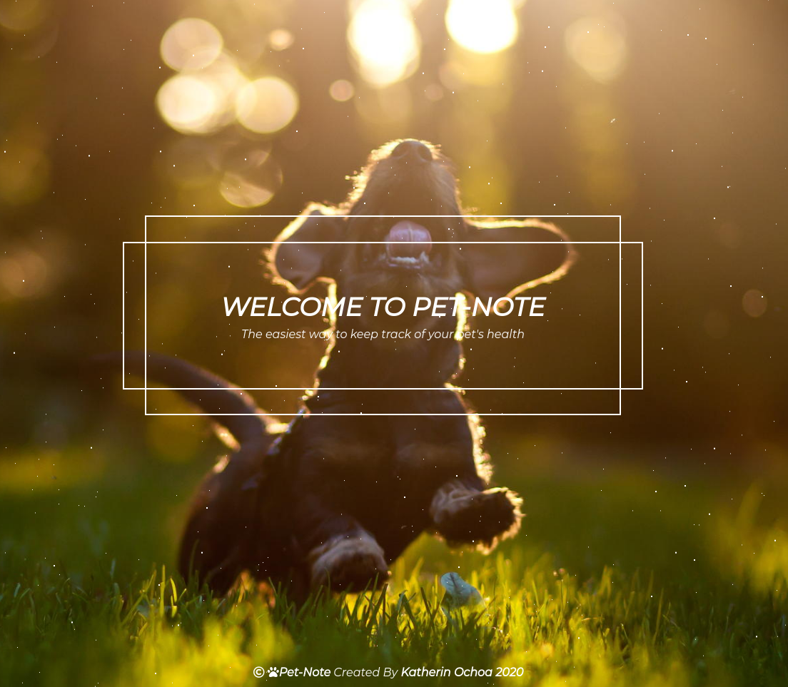
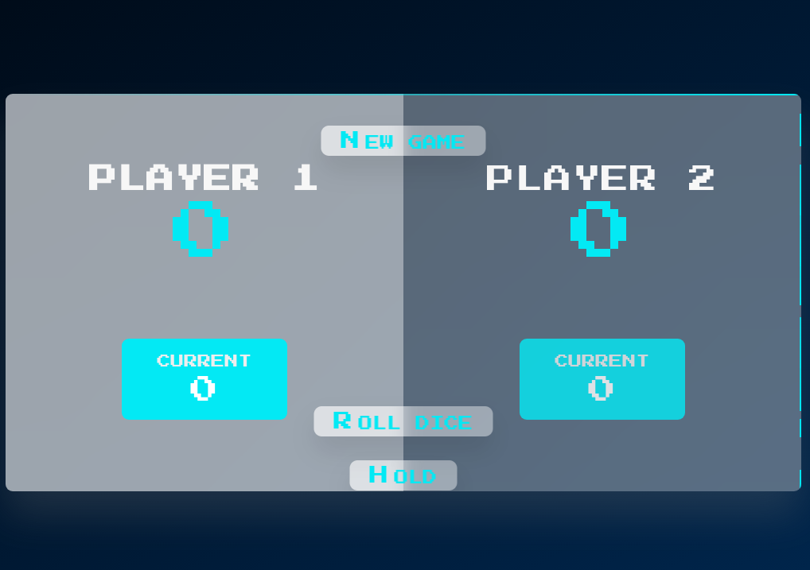

PORTFOLIO
About Me
My name is Katherin Ochoa. I started coding as a hobby, then I studied formally to become a web developer. I love programming and solving problems that arise in the day-to-day of this industry. I enjoy reading about new design techniques and programming paradigms as well as planning and building my applications for personal use.CSS Skills
- Layouts : Flexbox, Grid and positioning.
- Animations : Animations with @Keyframes and transitions.
- Css architecture : Sass, Component-based design, BEM, writing reusable code.
- Responsive design : Media queries, mobile-first and desktop-first desktop, using em , rem, px , %, vh units.

Javascript Skills
- Fundamentals : Data structures and operators, strings , arrays , objects etc..
- Modern OOP : Classes , constructors , prototypal inheritance, encapsulation,ES6 modules.
- Javascript : Event Loop, promises, async/await , AJAX calls and APIs.
- Tools : NPM, VSC, GitHub, Parcel, Babel, Netlify.
- Libraries/Frameworks : React, Material UI, Jest, Tailwind, Bulma, Bootstrap.
React Projects
- Pet-Note : Application to track everything related to your pet's health. See More
- Wc-app :


Game Projects
- Guess My Number :
- Zelda-Game :
- Dice-Game :
Certificates
- CS50's Introduction to computer science, Miami Dade College(2020)
- Web Development Bootcamp, Ironhack(2020)
- The complete Javascript Course 2021, Udemy(2021)
- Advanced CSS and Sass: FLexbox,Grid, Animations and More, Udemy (2021)
- Convert caffeine to code, Home University(1992-2021)